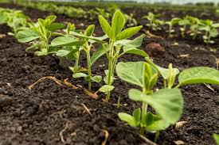
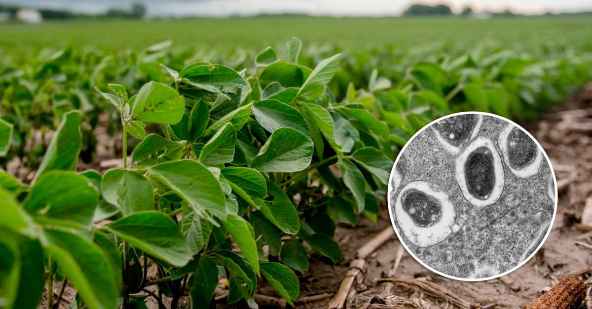
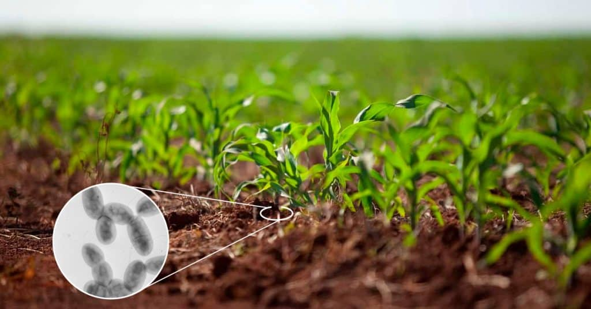

AgroHub🍀
Aqui vamos falar um pouco sobre o agronegócio e como é o uso de bactérias no plantio nas agropecuárias!
Você deve ter ficado se perguntando " Como assimn o uso de bactérias? ", vamos lá que vou te explicar algumas coisas sobre:
🌱 1. O Brasil é referência mundial em inoculação biológica
O uso de bactérias benéficas em culturas como a soja é uma das maiores histórias de sucesso da agricultura brasileira. Milhões de hectares utilizam inoculantes biológicos todos os anos.

🦠 2. Algumas bactérias "fabricam" nitrogênio para as plantas
Bactérias como Bradyrhizobium capturam o nitrogênio do ar e o transformam em uma forma que a planta consegue absorver. Isso reduz a necessidade de fertilizantes nitrogenados.
Abaixo uma foto ilustrativa sobre a Bradyrhizobium:

🌾 4. Bactérias também ajudam no crescimento das raízes
Espécies como Azospirillum estimulam o desenvolvimento radicular, aumentando a capacidade da planta de absorver água e nutrientes.
Mais exemplos sobre abaixo:
